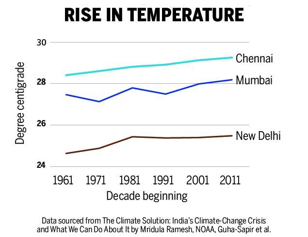
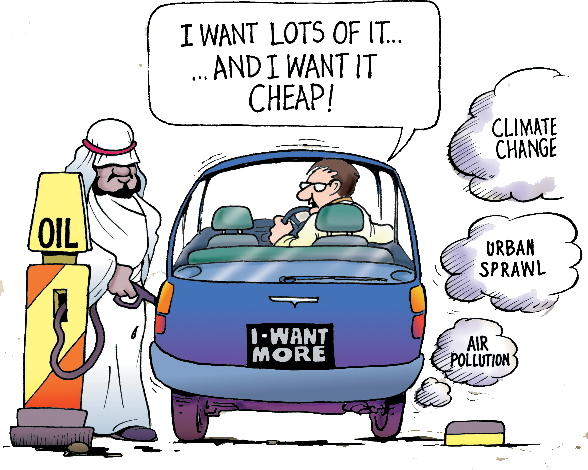

Did you know? In India, heatwave deaths have almost doubled over the past 20 years.
Delhi’s annual CO2 emission of 69.4 million tonnes is equal to the CO2 emission of Bengaluru,
Hyderabad and Chennai put together
Not surprisingly, the national capital region of Delhi has the highest annual carbon footprint in the country. In fact, Delhi’s annual CO2 emission of 69.4 million tonnes is equal to the CO2 emission of Bengaluru, Hyderabad and Chennai put together. When it comes to per capita CO emission, Chandigarh and Vadodara are far ahead of the rest with 3.9 tonnes and 3.5 tonnes respectively.
Move mouse over the bars to see details:
Move mouse over the bubbles to see details:
According to a study titled 'CO2 Emissions from Fuel Combustion (Highlights) 2017', which was released in November 2017, CO2 levels in India from fuel combustion increased from 181 million tonnes (MT) in 1971 to 2,066 MT in 2015—a 1,041 per cent increase.
Did you know? In India, heatwave deaths have almost doubled over the past 20 years.
Cities at risk
Bangalore, the prosperous software hub of India, is getting thirstier by the day even as it destroys its water bodies. New Delhi is blanketed every winter in thick, choking smog that you couldn't cut with a knife. Freak rains and cyclonic storms regularly bring Chennai to its knees. The annual dunking Mumbai gets every monsoon has become a part of life for millions. The signs are clear. Extreme weather events have started hurting Indian cities with frightening frequency
Extreme weather events have started affecting Indian cities with frightening frequency. A record 360 million people will be exposed to extreme heat in 142 Indian cities by 2050 if global warming continues. Temperatures in three Indian cities—Chennai, Mumbai and Delhi—in the last five decades have seen a steady rise. In Chennai alone, temperature has increased by an astonishing 0.9°C since 1960-70. The link between carbon emission and heating up of the world has been long established. The cities, which will emit more CO2 will see a faster rise in temperature as more CO2 concentration in the atmosphere means intense absorption of solar heat. There is no other way for these cities but to cut down on their carbon footprint.
Can Indian cities lead on climate action
By 2030, Indian cities will produce 70 per cent of the country’s wealth and be home to 590 million inhabitants. It is time they made wise choices like energy efficient appliances and buildings.
Today’s cities need "radical decarbonisation measures" like limiting vehicles that run on fossil fuel, shifting to mass transport, and gradually switching to 100 per cent renewable electricity that can significantly contribute towards reduction in carbon footprint.
Did you know? 650 million people, in over 500 cities globally are at risk of water shortages due to climate change, including Bengaluru, Chennai, Delhi, Jaipur & Kolkata
In a bid to move towards clean energy, this year, the Ministry of New and Renewable Energy, under its scheme “Development of Solar Cities”, has approved/sanctioned 60 cities, including 13 Pilot and 5 Model Cities up to 12th Five-year Plan period. At a time when urbanisation and economic development are leading to a rapid rise in energy demand in urban areas, measures such as these would help mitigate emissions.
Graph shows the Solar Cities for which Sanctions/In-Principle approvals have been given
Move mouse over the bars to see details:
Data Source: Solar / Green Cities (India), Ministry of New and Renewable Energy
Take the example of electric vehicles. The government has announced an ambitious target for all new vehicles in 2030 to be electric, starting with taxis, e-rickshaws and buses and, eventually, private vehicles. The motivations are to reduce vehicular emissions, improve air quality and reduce dependence on foreign oil, all perfectly reasonable. But the scheme avoids asking how cities will negotiate the rise in vehicles with the implications on other urban objectives – such as exacerbated congestion and the need for an increased share of public transit. Policy making has, so far, shirked from deliberating these difficult questions.
Data source:
✸ Climate Central
✸ World Meteorological Organization (WMO)
✸ The Future We Don’t Want: How Climate Change Could Impact the World’s
Greatest Cities, Feb 2018
✸ Climate action in Indian cities: an emerging new research area, Journal of Integrative Environmental Sciences, Volume 13, 2016 - Issue 1
✸ Indian cities and climate challenge, Business Line
✸ Can Indian cities lead on climate action as they go about their development goals?, Scroll
✸ Climate disconnect in India’s smart cities mission
✸ Initiating and sustaining action: Experiences building resilience to climate change in Asian cities